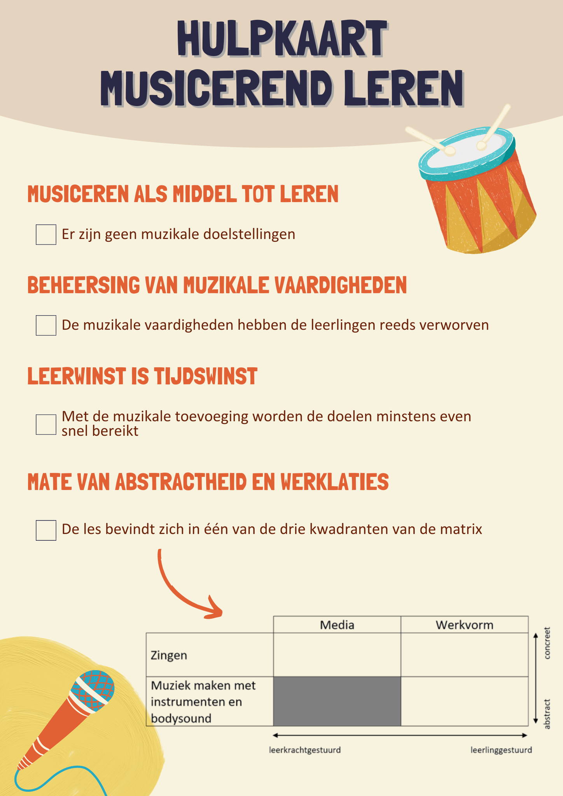

Avans Hogeschool. (2018, 5 18). Het brein en emoties: hoe werkt dat? Opgehaald van LIC Leer- en Innovatiecentrum
https://lic.avans.nl/service.lic/publicaties/brein-emoties-en-leren-1
Alhoewel integratie een term is die meer en meer gebruikt wordt in het lager onderwijs, zijn niet alle integratievormen even sterk uitgewerkt. Een integratievorm waarbij muziek als middel wordt ingezet bij andere leergebieden, zag ik echter niet in mijn opleiding, in het werkveld als in enige literatuur. Het concept musicerend leren kan dit hiaat opvullen.
Musicerend leren is muziek inzetten om cognitieve leeractiviteiten te ondersteunen, versnellen of te vergemakkelijken. De vooropgestelde doelstellingen worden daarbij minstens even snel of sneller bereikt. Hierbij is muziek een middel en geen doel op zich, dus er mogen ook geen doelstellingen voor muziek aanwezig zijn.
Om zelf een les musicerend leren te ontwerpen, kan onderstaande hulpkaart een handige checklist zijn. De checklist bevat de voorwaarden waaraan een les musicerend leren moet voldoen.
Hieronder zijn drie lessen musicerend leren te vinden als voorbeeld voor elk kwadrant. Klik op de voorbeeldles om de lesfiche met de bijhorende materialen te downloaden.
| Media | Wekrvorm | |
|---|---|---|
| Zingen | ||
| Muziek maken met instrumenten en bodysound |